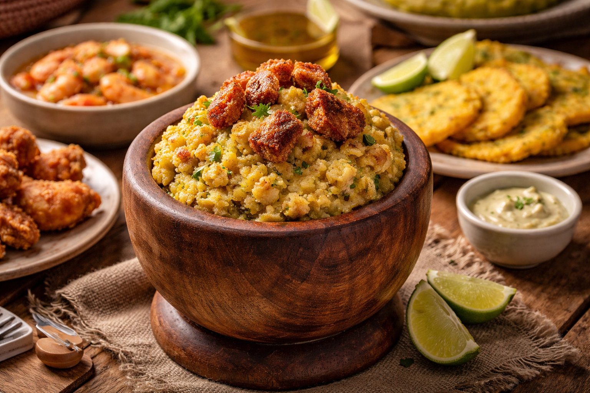
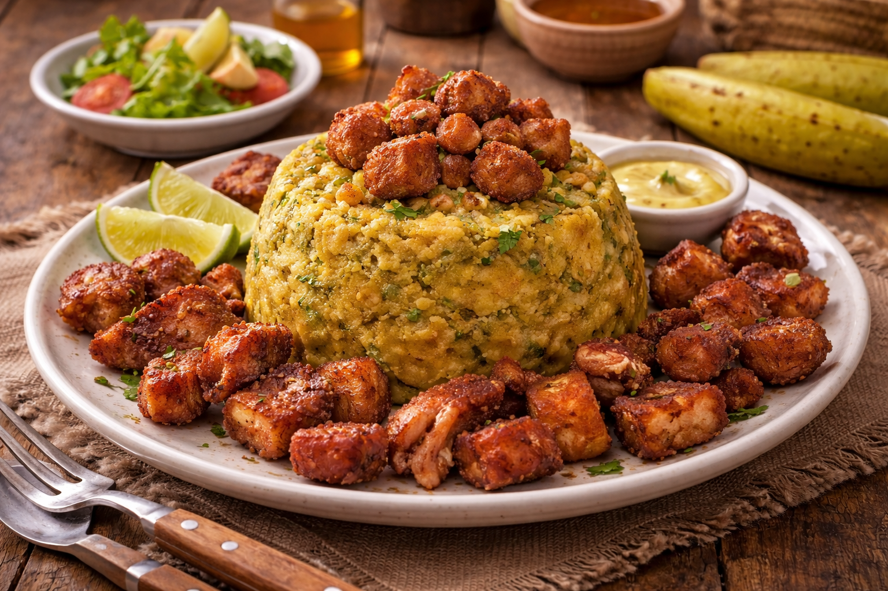

Main Page
Mofongo Recipe

Mofongo is a traditional Caribbean dish deeply loved in the Dominican Republic and also very popular
in Puerto Rico. It is made from green plantains that are fried and then mashed together with garlic,
pork cracklings (chicharrón), and oil or butter. The mixture is packed into a bowl to form a dome
shape and can be served on its own, with broth, or topped with shrimp, chicken, or beef. It’s rich,
savory, and slightly crispy from the plantains, making it a comforting and filling meal.
Ingredients
- 4 green plantains
- 3 cloves garlic
- 1 cup pork cracklings (chicharrón), crushed
- 3 tablespoons butter or olive oil
- egetable oil for frying
- alt to taste
Steps
- Peel the green plantains and cut them into thick slices.
- Heat vegetable oil in a pan over medium heat.
- Fry the plantain pieces until golden and cooked through, but not too dark. Remove and drain on paper towels.
- In a mortar (pilón), mash the garlic with a pinch of salt until it forms a paste.
- dd the fried plantains a few pieces at a time and mash them together with the garlic.
- Mix in the crushed chicharrón and butter or olive oil while mashing until well combined.
- Continue mashing until the mixture is slightly chunky but well blended.
- Press the mixture firmly into a small bowl to shape it, then flip it onto a plate to serve.
- Optional: Serve with caldo (broth) on the side or top with shrimp, chicken, or steak.

Main Page